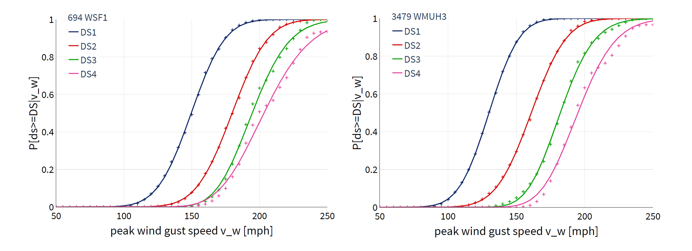

Damage and Loss Estimation
Damage and loss functions from the HAZUS Hurricane Damage and Loss Model ([FEMA18a], [FEMA18b]) were implemented in PELICUN to support loss assessment for all configurations of buildings currently supported by HAZUS for wind and flood hazards.
These configurations represent all the possible unique configurations of building attributes associated with each building class (defined by material) and subclass (defined by occupancy) defined in the Atlantic County, NJ testbed. For example, wood (class) single-family homes 1-2+ stories (subclass) would have damage and loss functions associated with each unique combination of attributes used to define key features of the load path and components (e.g., roof shape, secondary water resistance, roof deck attachment, roof-wall connection, shutters, garage), as well as the exposure (terrain roughness). Notably, only the WSF and WMUH configurations are relevant to this testbed.
The HAZUS damage and loss functions consist of tabular data to describe the fragility or expected losses as a function of hazard intensity. These data were used to calibrate coupled damage and loss models to estimate the damage state and the corresponding expected loss ratio for each building configuration in PELICUN. Continuous functions (Normal or Lognormal cumulative density functions) were fit to the synthetic data by maximizing the likelihood of the observations assuming a Binomial distribution of outcomes at each discrete hazard intensity in the HAZUS database. Coupling the damage and loss models in this way ensures more realistic outcomes (e.g., a building with no damage cannot have total loss when the two models are coupled), and the parameterized models allow for more efficient storage and computations within the workflow.
For the wind loss assessment, the HAZUS functions consist of tabular data to
describe the fragility or expected losses as a function of peak wind speed (PWS).
Only data up to 200 mph wind speeds were used because the substantial reduction in the
number of observations introduces significant measurement error above that level (see examples in wind_df).
{kind=link}

Fitted HAZUS wind damage functions for example building classes.
FEMA (2018), HAZUS – Multi-hazard Loss Estimation Methodology 2.1, Hurricane Model Technical Manual, Federal Emergency Management Agency, Washington D.C., 718p.
FEMA (2018), HAZUS – Multi-hazard Loss Estimation Methodology 2.1, Flood Model Technical Manual, Federal Emergency Management Agency, Washington D.C., 569p.